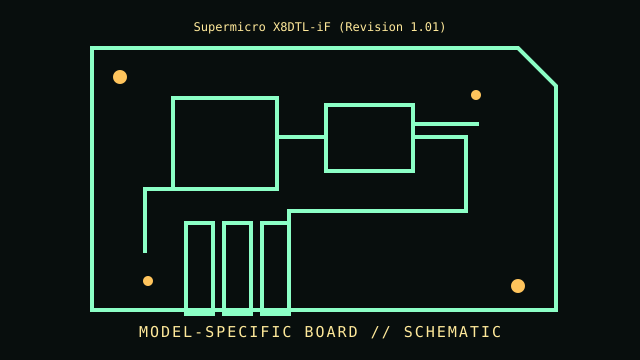

[ INDIVIDUAL COMPONENT // MOTHERBOARDS ]
Supermicro X8DTL-iF (Revision 1.01)
Dual LGA1366 / Intel 5520, 2009–2010. This entry documents one exact board model/revision; its specifications are not interchangeable with similarly named variants.

REVISION WARNING: Confirm the PCB silk-screen, assembly/AA code and firmware ID on the actual board. Where documentation does not identify one PCB spin, this record states the exact documented model and explains the revision distinction below.
Specifications
| Exact model / revision | X8DTL-iF PCB revision 1.01 |
|---|---|
| CPU / socket | Dual Intel Xeon 5500/5600 families as qualified for this revision/BIOS; processor pair rules apply |
| Chipset / platform | Intel 5520 I/O hub + ICH10R |
| Memory | Six DDR3 ECC DIMM slots (three per CPU); registered/unbuffered and capacity limits depend on CPU and manual population tables |
| Form factor | Extended ATX |
| I/O and expansion | PCIe expansion, PCI, SATA, dual Gigabit Ethernet, VGA and dedicated IPMI/BMC management network |
| Firmware compatibility | AMI BIOS plus BMC/IPMI firmware; Xeon 5600 support and memory training depend on BIOS revision |
Compatibility and revision pitfalls
X8DTL-iF is not X8DTL-6F or X8DTL-3F. Verify board name/revision and CPU/BIOS matrix; CPU1 must be populated first and memory is organized by CPU-local channels. IPMI firmware is separate from BIOS.
Socket fit alone is not proof of support. Confirm the manufacturer CPU support list, the board's minimum BIOS, memory population table, and exact chassis/power requirements before operation.
Preservation notes
Archive BIOS and BMC versions, MAC/IPMI labels, sensor readings and chassis wiring. Preserve the I/O shield and management LAN mapping; inspect LGA1366 socket pins, VRM capacitors and onboard battery before powering.
Record provenance, date/serial codes, board and firmware revision, known repairs and test conditions. Photograph labels and connectors before cleaning or component removal; retain original firmware and configuration data when possible.
Sources & further reading
- Supermicro X8DTL-iF — archived original board documentationArchived model-specific documentation for Supermicro X8DTL-iF; compare board revision and processor/memory tables.
- Supermicro MBD-X8DTL-iF product archiveArchived original board files for the X8DTL-iF model; BIOS and BMC versions are distinct.
Manufacturer manuals, CPU lists and archived primary documents take precedence over reseller summaries. If an archived support page omits a revision-specific file, do not assume another revision's firmware is compatible.